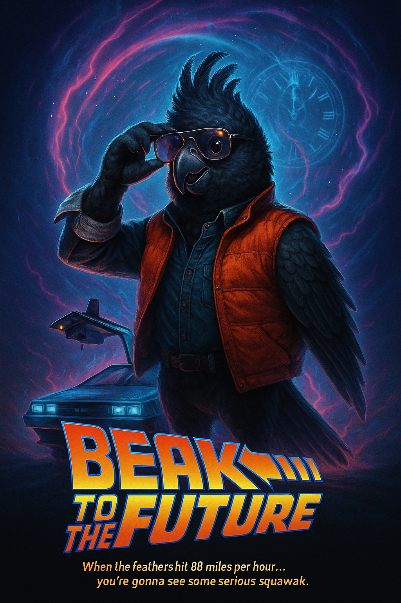

A live placeholder and discovery page for a B$S micro-project about speed, toys, parody, DIY filmmaking and miniature myth-making.
Live prototype artefact · miniature myth
I Ran LEGO
A playful Blue $nake Studio side-quest: tiny bricks, big chase energy, improvised world-building and the comic edge of the B$S archive.
Use this page as the canonical home for the I Ran LEGO experiment while the artefact grows into video, print, toy-photography or interactive form.

Part of the humour, prototype and visual-world layer: a bridge between gallery artefact, short-form video idea and playful browser relic.
Add the final media, credits and release links here as the project becomes a finished clip, print sheet, interactive scene or archive entry.
LEGO is a trademark of the LEGO Group, which does not sponsor, authorise or endorse this independent Blue $nake Studio artefact.